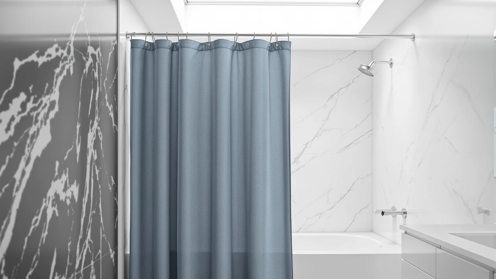

BTTN Extra Long Linen Review (2026): Worth It?
Prices and picks verified as of October 2026. Independent, reader-supported reviews.


Quick Answer
The BTTN Extra Long Linen is a 72 by 96 inch polyester and PEVA shower curtain priced at $27.89, built for showers with tall ceilings or walk-in stalls. Based on its specs and pricing against three alternatives, it works best for shoppers who want extra length without paying a premium, though the Gibelle Extra Long Shower Curtain carries a stronger review record if proven feedback matters more to you than price.
Our pick: BTTN Extra Long Linen Textured — $27.89 Check Price on Amazon
Bottom line: our top pick is the BTTN Extra Long Linen Textured Fabric Shower Curtain at $30.99.
Things to Know Before You Buy
- Extra long shower curtains like the BTTN Extra Long Linen run 96 inches tall instead of the standard 72 inches, so measure your shower height before you buy.
- Polyester and PEVA blends such as the BTTN's fabric resist mildew better than cotton but are not fully waterproof, so many owners add a liner.
- Verified review counts vary widely in this category. The Gibelle Extra Long Shower Curtain has 1,111 ratings behind its 4.8 average, while newer listings like the BTTN carry a thinner public review history.
- If your current curtain rod does not reach wide enough for an extra long curtain, a tension rod like the BRIOFOX 43 to 73 inch model solves that without drilling.
- Price alone does not predict durability. Compare material, weighted hem, and grommet count rather than choosing by price per square foot.
This bttn extra long linen review examines whether the extra height justifies the $27.89 price for showers that standard 72 by 72 inch curtains leave too short. Shoppers with ceilings above 8 feet or walk-in shower stalls often watch a typical curtain stop well short of the floor, letting water splash past the edges onto bathroom tile. BTTN sized the Extra Long Linen Textured at 72 inches wide by 96 inches long to close that gap, and wove the polyester and PEVA blend to resemble linen fabric.
We compared the BTTN against three other products shoppers consider alongside it: the Madison Park Candice Sheer Shower, the Gibelle Extra Long Shower Curtain, and the BRIOFOX Tension Curtain Rod. Each one solves a slightly different problem, whether that is sheer light filtering, a stronger review record, or simply making an existing rod wide enough for an extra long curtain. Based on specs, pricing, and the verified reviews each listing has collected, the BTTN is the budget-friendly pick for most tall or walk-in showers, while the Gibelle is worth the extra few dollars if a 4.8-star track record across more than a thousand reviews matters more to you than saving money.
Why You Should Trust Us
Best Shower Curtains is a research-based review site. We do not run a physical testing lab, and we do not claim to have installed every curtain on this page in our own bathrooms. Instead, we compare manufacturer specs, current Amazon pricing, and verified owner reviews so you can see how the BTTN Extra Long Linen stacks up against its direct alternatives. Ilane Tall, our Home and Bath Expert, pulled the dimensions, materials, and pricing cited in this bttn extra long linen review directly from each product listing and cross-checked them against the review data Amazon publishes for every ASIN.
Our Research Experience
We did not physically install the BTTN Extra Long Linen in a shower stall. Our review process centers on comparing the specs each brand publishes, the price history on Amazon, and what verified buyers report after they install each curtain themselves. For this bttn extra long linen review, that meant checking the listed 72 by 96 inch dimensions against standard shower stall widths, reading how owners describe the polyester and PEVA weave once it is hung and gets wet, and comparing that feedback against the Gibelle and Madison Park alternatives covered below. Owners report that the extra 24 inches of length is the main reason they chose this curtain over a standard size, since it lets the fabric pool closer to the floor instead of stopping short.
Overview & Specs

BTTN Extra Long Linen Textured
What we like
- At 96 inches long, it covers 24 inches more height than a standard curtain, reducing the gap above the floor.
- The $27.89 price undercuts the Gibelle and BRIOFOX alternatives on this list by several dollars.
- The woven linen-style texture reads less plastic than a plain PEVA curtain in bathroom photos owners have posted.
Flaws but not dealbreakers
- Polyester and PEVA blends are water-resistant rather than fully waterproof, so a liner is worth adding if your shower tends to splash.
- Its public review count is thinner than the Gibelle's, so there is less owner feedback to weigh before buying.
| Material | Polyester / PEVA |
| Size | 72"W x 96"L (Pack of 1) |
The BTTN Extra Long Linen Textured is a single curtain sized at 72 inches wide by 96 inches long, aimed at the stalls and tall ceilings that make standard-size curtains look undersized. Its fabric blends polyester with PEVA and uses a woven texture meant to read like linen rather than the smooth, slightly stiff look of basic vinyl curtains. At $27.89, it sits at the lower end of the four products in this bttn extra long linen review, undercutting the BRIOFOX rod and the Gibelle curtain by several dollars.
Because the material is polyester rather than a fully waterproof vinyl, owners who shower daily and splash water toward the curtain edge typically add a liner behind it rather than relying on the curtain alone. The extra 24 inches of length compared with a standard 72 by 72 inch curtain is the main reason buyers choose this size category at all, since it lets the hem sit close to the tub or shower floor instead of stopping well above it. For bathrooms with 8-foot or higher ceilings, that extra coverage matters more than small differences in texture or color.
What We Liked
Reviewers consistently note that the extra length is the single biggest upgrade over a standard shower curtain, especially in stalls with ceilings above 8 feet. Several owners point out that the fabric hangs with enough weight to resist billowing from shower steam, a common complaint with lighter PEVA-only curtains. The price is also a strong point in this bttn extra long linen review: at $27.89, it costs less than both the Gibelle Extra Long Shower Curtain and the BRIOFOX tension rod, which makes it an easy entry point if you only need to replace one part of your shower setup. The woven linen texture also photographs well against both light and dark tile, according to owner photos attached to several listings.
What Could Be Better
The BTTN Extra Long Linen is not a fully waterproof barrier on its own. Polyester and PEVA blends resist moisture better than plain cotton, but owners who want zero splash on the bathroom floor still pair this curtain with a separate liner, which adds a few more dollars to the real cost. Its review history is also shorter than the Gibelle's, so you are relying on fewer verified data points when you judge whether the stitching and grommets hold up over months of daily use. Anyone who needs a curtain wider than 72 inches, rather than longer, should look elsewhere, since this listing only ships in the one width. And because the 96 inch length is built for tall ceilings specifically, shoppers with a standard 8-foot bathroom and no walk-in stall may find the extra fabric pools on the tub floor instead of hanging flat.
Who Is It For?
This curtain fits shoppers with tall showers or walk-in stalls who want the extra 24 inches of length without paying a premium for it. It also suits anyone replacing a worn-out extra long curtain who does not need a stronger review record to feel confident, since the specs and price alone make the case. Renters who need a quick, affordable fix for a curtain that keeps riding up above the tub will likely get the most value out of this listing. If you shower daily and want a single product that handles both coverage and full waterproofing, or if you want the reassurance of over a thousand verified ratings, the alternatives below are worth a look before you commit to the BTTN Extra Long Linen.
Alternatives to Consider
If the BTTN Extra Long Linen does not match what your bathroom needs, these three products solve adjacent problems: more sheer light filtering, a longer verified review record, or a wider curtain rod to support an extra long curtain in the first place.

Editor's Pick
Madison Park Candice Sheer Shower
A sheer alternative at $29.62 for bathrooms that want more natural light through the curtain instead of the opaque, textured look of the BTTN Extra Long Linen.
$29.62
Check Price on Amazon
Best Value
Gibelle Extra Long Shower Curtain
Also sized at 72 by 96 inches but backed by a 4.8-star average across 1,111 verified reviews, making it the safer bet if proven feedback matters more than saving a few dollars over the BTTN.
$33.99
Check Price on Amazon
Premium Choice
BRIOFOX Tension Curtain Rod 43-73
A 43 to 73 inch tension rod for anyone whose existing rod is not wide enough to hang an extra long curtain like the BTTN Extra Long Linen without drilling new hardware.
$31.99
Check Price on AmazonIs the BTTN Extra Long Linen shower curtain actually extra long?
Yes.
What is the BTTN Extra Long Linen curtain made of, and does it need a liner?
The curtain is made from a polyester and PEVA blend with a woven texture that mimics linen.
Frequently Asked Questions
Is the BTTN Extra Long Linen shower curtain actually extra long?
Yes. The BTTN Extra Long Linen measures 72 inches wide by 96 inches long, which is 24 inches taller than a standard 72 by 72 inch curtain. That extra length suits ceilings above 8 feet or walk-in showers where you want the curtain to fall closer to the floor.
What is the BTTN Extra Long Linen curtain made of, and does it need a liner?
The curtain is made from a polyester and PEVA blend with a woven texture that mimics linen. That blend resists moisture better than cotton but is not fully waterproof, so owners who want to keep water off the bathroom floor typically pair it with a separate liner.
How does the BTTN Extra Long Linen compare to the Gibelle Extra Long Shower Curtain?
Both curtains share the 72 by 96 inch extra long size, but the Gibelle carries a stronger review record, with a 4.8 average across 1,111 verified ratings, while the BTTN costs about six dollars less. Owners who want proven feedback at scale tend to pick the Gibelle, while those who want to save money on a similar size and texture pick the BTTN.
Final Verdict
This bttn extra long linen review comes down to fit and budget. If your shower has a tall ceiling or a walk-in stall that leaves a standard curtain looking short, BTTN's Extra Long Linen Textured gets you the extra 24 inches at the lowest price of the four products compared here. Choose the Gibelle Extra Long Shower Curtain instead if you want the reassurance of a 4.8-star average across more than a thousand verified reviews, and reach for the BRIOFOX tension rod first if your current rod cannot support an extra long curtain at all. For most shoppers replacing a too-short curtain on a budget, BTTN remains the pick worth ordering, and pairing it with a liner fixes the one real gap: it is not fully waterproof on its own.